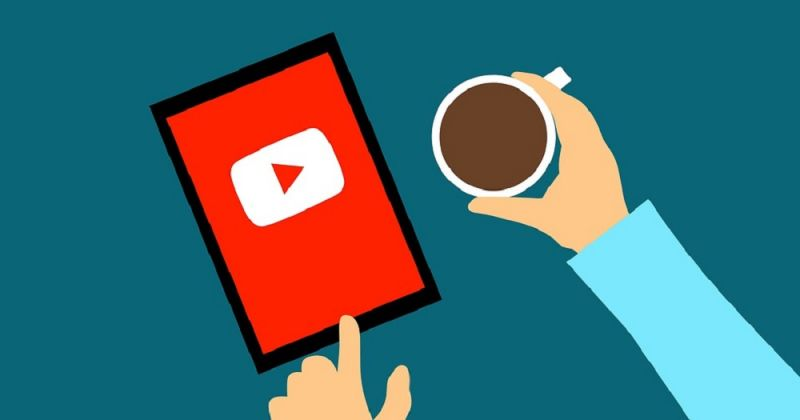

Multimídia
----------
Edição de video
Edição de audio
Edição de imagem
Disponibilizar o video no Libreflix

Disponibilizar o video no YouTube
Transmissão ao vivo pelo YouTube (muito usado pelas igrejas em tempo de pandemia)
Pode-se utilizar o termo transmissão ao vivo para se referir a uma transmissão em tempo real
de um evento, aula, entrevista, independente se ela estiver acontecendo em um espaço físico
com público/ouvintes presentes ou não.
Valores a partir de R$ 150,00.